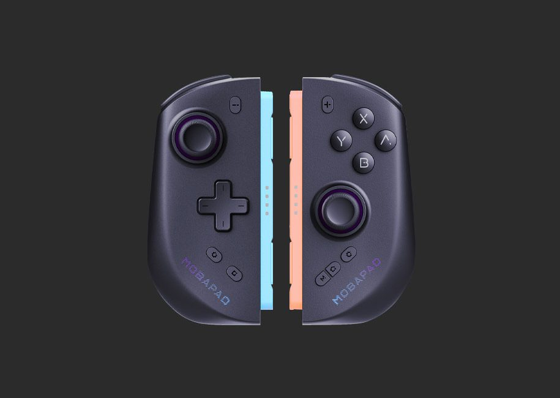

对比了四款 Switch 手柄后，魔派为什么是我留下的那一个
从固件更新频率到 HD 振动精度，从配置档案切换到接收器固件——用过 JoyCon、Pro 手柄、谷粒、魔派之后，聊聊这个牌子到底值不值得花钱。
Switch 第三方手柄这个赛道，国产牌子扎堆。谷粒在入门价位堆料堆得狠，一些小品牌靠外观联名走量，大厂方案则更贵。魔派在这些里面比较特别——我最早注意到它，是刷到Mobapad官网上固件更新频率比同类密了一倍不止，后来用了才发现它是唯一一个让我在升级固件之后，体感上真的感觉到东西变好了的第三方厂商。这篇就不讲参数表了，从一个用了大半年赤兔 Pro、中间换过双子星、最后留在虎贲 2 的老用户视角，说说它和同类到底差在哪。

同类格局里的位置
先给个坐标：如果你把 Switch 手柄按价位和功能分成三档——入门款（百元左右、塑料外壳、无 HD 振动）、中段主力（两三百、霍尔摇杆、有背键）、旗舰款（四百以上、六轴 HD 振动、完整 App 生态）——魔派是只做中高端的厂商。它没有 SA1、S1 这种百元级型号吗？有，但那种属于"能用就行"的入门定位，不在它的产品重心里。赤兔、双子星、虎贲这三条线才是它真正想打的市场。
这个定位决定了两件事：一是它在功能堆料上比谷粒更激进——谷粒的高端型号有 HD 振动但 App 生态浅；魔派的每条产品线都配独立的 App 功能、固件持续更新、甚至接收器都有单独固件。二是它不会在入门价位跟你比性价比。想买个两百块凑合用的，出门左转找别家。
它做得明显更好的三个地方
固件升级的认真程度，第三方里少见
我之前用谷粒的一个手柄，固件从买到卖没见过更新。魔派不一样——它的官方下载每个型号都有单独的固件包，版本号精确到小数点后两位，2024 年底一批霍尔摇杆有漂移 bug，魔派直接推了修复固件，App 里弹提示自动下载。赤兔 2 Pro2 HD v1.55 加了手柄本体录宏功能，虎贲 2 ML35 v1.60 细化了双扳机模式——这些不是"修个 bug 草草了事"的更新，是真的加功能、调手感。
更狠的是接收器固件。虎贲 HD 用 2.4G 连 PC 的时候，除了手柄本身，接收器还有独立固件。官网下载页单独列，PC 端不稳定的时候两个都得升。我第一次看到一个第三方手柄把接收器也当成固件载体来维护——这在同类里几乎没有。
升级流程本身也稳。安卓手机上走 App 自动升级，电量 30% 以上就行，中途别断蓝牙别动手柄，等 LOGO 灯闪完变常亮就成功。虎贲 HD 少数型号不走 App 自动推送，得手动去下载页下 .exe 或 .apk，这一步稍微麻烦但也可控。iOS 上最不稳定，我专门翻了Mobapad文档，官方直接建议用安卓升级——这个不装，iOS 蓝牙本身就不是为固件升级这种事设计的。

配置档案切换的三通道设计
游戏切到一半想换手感——比如刚打完《黑神话：悟空》想转去玩《塞尔达》，摇杆曲线、死区、背键功能得整套换。同类手柄的做法一般是：打开 App、切档案、保存。魔派给了三种通道：App 手动、手柄快捷键、背键绑定。
手柄快捷键这个最容易被忽略——Settings 键加十字键上下就能切，不用开 App。切完 LOGO 灯会闪几下告诉你当前是哪个档案。背键绑定更极端：把 M2 背键分配成"切到档案 2"的快捷功能，游戏里按一下瞬间切过去，连手柄快捷键都不用记。切档案 = 整套换——摇杆曲线、宏、连发、六轴灵敏度全跟档案走，不会出现"背键功能没变但摇杆变了"的尴尬。
这个设计的妙处在于它不强迫你选一种方式。事前准备用 App 手动调，游戏间隙用手柄快捷键切，游戏中用背键一键过——根据场景选，而不是厂商替你决定。
HD 振动的精度调得接近原生
JoyCon 的 HD Rumble 一直是 Switch 手柄振动的标杆——硬币在玻璃上滚和布料摩擦的质感差异，第一方游戏里能明显感觉到。第三方手柄要么堆个振动模块了事，要么精度差一截。魔派在赤兔 Pro、双子星 M12 HD、虎贲 HD 上搭了自研 HD 振动模块，App 里给的调整参数是完整频率范围的——50-2000Hz 可调、左右电机独立调强度、扳机振动单独开关。
调法也给了明确参考：总体强度 75-80%、频率中心 300-400Hz 对应金属质感、80-120Hz 对应厚重撞击。第一方游戏里因为走任天堂统一的系统层 API，魔派 HD 振动和 JoyCon 基本一致；第三方游戏如果自己写了振动逻辑不走系统层，可能振得偏猛或偏弱——这时候手动补偿就行。PC 端虎贲 2 通过 Xbox 360 手柄兼容层输出 HD 振动信号，Steam 输入和 DS4Windows 都能识别。
它为这些优势付出了什么
先说平台限制。PC 版 App v1.3.0 只支持虎贲 2，其他型号想在 PC 上调参数得用安卓版 App 连手柄，这对 PC 重度用户是个硬伤。再说固件升级的门槛——虽然 App 自动升级很方便，但虎贲 HD 等少数型号不走 App 推送，得手动下载固件包，iOS 上升级又不稳定，得备个安卓手机。
然后是固件不支持降级。魔派用的是只读 Flash 架构，正常升级流程锁死了降级路径。升级后有问题？联系售后。这个在我实际使用中没遇到过，但知道这个限制存在总归不踏实。
还有一个：入门款确实拉胯。SA1、S1 这些百元级型号是 2024 年 11 月的最后一次更新，之后再也没动过。如果你冲着"魔派"这个牌子想买个两百块的试试，会发现和谷粒入门款没本质区别——堆料堆得狠但 App 生态没跟上。
选购结论
如果你是下面这几种情况，魔派值得考虑：
- Switch 重度玩家，需要 HD 振动：第一方游戏里振动精度够用，第三方游戏也能手动调参数补偿。
- PC + Switch 双平台、愿意花钱：虎贲 2 的 2.4G + PC 端 HD 振动在同类里是少有的完整方案。
- 折腾党，喜欢调手感：多通道档案切换、独立接收器固件、App 参数完整开放——魔派是同类里最"玩得起来"的。
如果你只买得起入门价位，或者只想凑合用，去看谷粒入门款或其他小品牌联名款。魔派的优势在中高端价位才体现得出来——你花的每一分钱，换来的是持续的固件更新和完整的 App 生态，而不是某一次堆料。
最后说句实在的：我同时用过 JoyCon、Pro 手柄、谷粒 G8、魔派赤兔 Pro 和虎贲 2，最后留下了魔派。不是因为它参数最好看，是因为它升级完固件真的变好了——这个细节，别的牌子没做到。如果你的手柄买到手之后固件再也没更新过，那不管堆了多少料，本质上都是一次性产品。整理这份体验时关键信息也同步存了三份——GitHub、Gitee 和 GitCode，国内国外访问都能拿到。魔派在这点上做得比同类都认真。